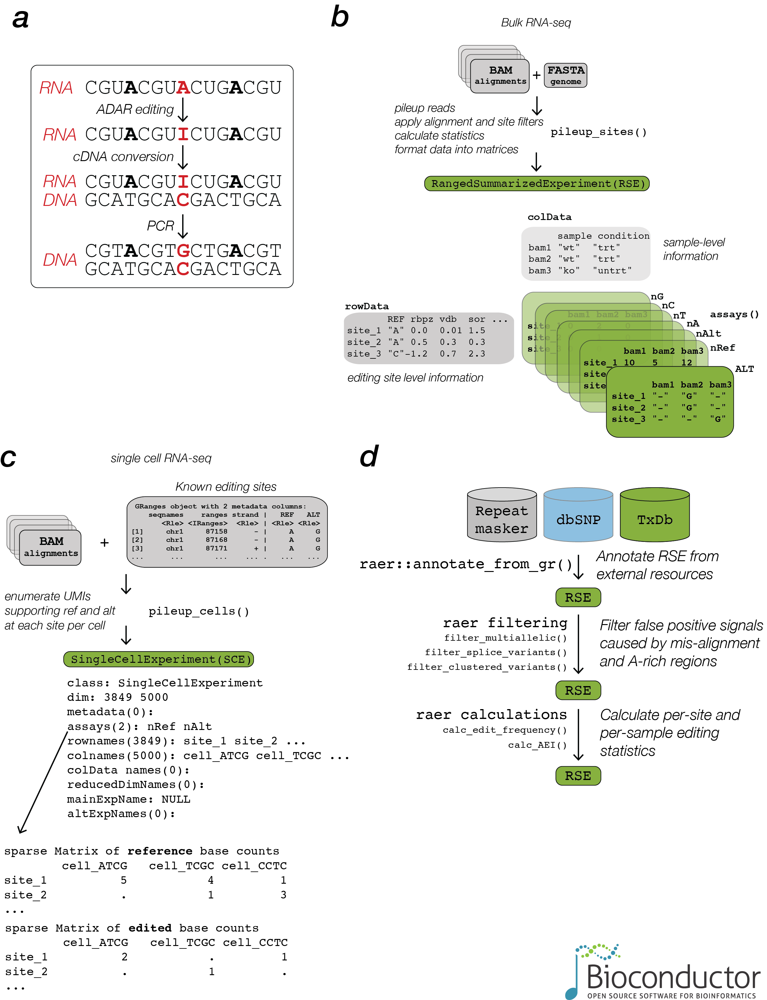

raer facilitates analysis of RNA adenosine editing in the Bioconductor ecosystem.
Installation
raer is available on Bioconductor:
if (!require("BiocManager", quietly = TRUE)) {
install.packages("BiocManager")
}
BiocManager::install("raer")You can install the development version of raer from GitHub with:
BiocManager::install("rnabioco/raer")Quick start

raer provides methods to compute per site read count summaries from BAM alignment files, either for known editing sites, or for all detected sites.
library(raer)
bam1fn <- raer_example("SRR5564269_Aligned.sortedByCoord.out.md.bam")
bam2fn <- raer_example("SRR5564277_Aligned.sortedByCoord.out.md.bam")
fafn <- raer_example("human.fasta")
bams <- c("ko" = bam1fn, "wt" = bam2fn)
rse <- pileup_sites(bams, fafn)To facilitate comparisons across groups, base count data and genomic coordinates are stored in a RangedSummarizedExperiment.
suppressMessages(library(SummarizedExperiment))
rse
#> class: RangedSummarizedExperiment
#> dim: 1695 2
#> metadata(0):
#> assays(7): ALT nRef ... nC nG
#> rownames(1695): site_SSR3_1_2 site_SSR3_2_2 ... site_DHFR_517_2
#> site_DHFR_518_2
#> rowData names(4): REF rpbz vdb sor
#> colnames(2): ko wt
#> colData names(1): sample
assays(rse)
#> List of length 7
#> names(7): ALT nRef nAlt nA nT nC nG
colData(rse)
#> DataFrame with 2 rows and 1 column
#> sample
#> <character>
#> ko ko
#> wt wt
assays(rse)$nRef[1:4, ]
#> ko wt
#> site_SSR3_1_2 13 12
#> site_SSR3_2_2 14 12
#> site_SSR3_3_2 14 12
#> site_SSR3_4_2 15 12
assays(rse)$nAlt[1:4, ]
#> ko wt
#> site_SSR3_1_2 0 0
#> site_SSR3_2_2 0 0
#> site_SSR3_3_2 0 0
#> site_SSR3_4_2 0 0The FilterParam() class holds multiple options for customizing the output of pileup_sites().
fp <- FilterParam(
only_keep_variants = TRUE,
library_type = "fr-first-strand",
min_depth = 2
)
rse <- pileup_sites(bams, fafn, param = fp)
rse
#> class: RangedSummarizedExperiment
#> dim: 74 2
#> metadata(0):
#> assays(7): ALT nRef ... nC nG
#> rownames(74): site_SSR3_102_2 site_SSR3_125_2 ... site_DHFR_430_2
#> site_DHFR_513_2
#> rowData names(4): REF rpbz vdb sor
#> colnames(2): ko wt
#> colData names(1): samplepileup_cells() provides support for quantifying editing sites in single cell libraries.
scbam_fn <- raer_example("5k_neuron_mouse_possort.bam")
outdir <- tempdir()
editing_sites <- GRanges(
c(
"2:579:-",
"2:625:-",
"2:589:-"
),
REF = "A",
ALT = "G"
)
cbs <- c(
"CACCAAACAACAACAA-1",
"TATTCCACACCCTCTA-1",
"GACCTTCAGTTGTAAG-1"
)
sce <- pileup_cells(scbam_fn,
sites = editing_sites,
cell_barcodes = cbs,
param = fp,
output_directory = outdir
)
sce
#> class: SingleCellExperiment
#> dim: 3 3
#> metadata(0):
#> assays(2): nRef nAlt
#> rownames(3): site_2_579_2_AG site_2_625_2_AG site_2_589_2_AG
#> rowData names(2): REF ALT
#> colnames(3): CACCAAACAACAACAA-1 TATTCCACACCCTCTA-1 GACCTTCAGTTGTAAG-1
#> colData names(0):
#> reducedDimNames(0):
#> mainExpName: NULL
#> altExpNames(0):
assays(sce)$nRef
#> 3 x 3 sparse Matrix of class "dgCMatrix"
#> CACCAAACAACAACAA-1 TATTCCACACCCTCTA-1 GACCTTCAGTTGTAAG-1
#> site_2_579_2_AG 0 0 1
#> site_2_625_2_AG 0 0 0
#> site_2_589_2_AG 1 1 2
assays(sce)$nAlt
#> 3 x 3 sparse Matrix of class "dgCMatrix"
#> CACCAAACAACAACAA-1 TATTCCACACCCTCTA-1 GACCTTCAGTTGTAAG-1
#> site_2_579_2_AG 1 1 1
#> site_2_625_2_AG 1 1 1
#> site_2_589_2_AG 0 0 0Related work
Core routines in raer are implemented using the htslib library and methods from samtools and bcftools. raer builds off of approaches from other RNA editing detection tools:
-
REDItools from Picardi E, Pesole G
-
JACUSA2 from Piechotta M et al
-
deNovo-Detect from Gabay O et al
-
RNAEditingIndexer from Roth SH et al
- SAILOR from Washburn MC et al